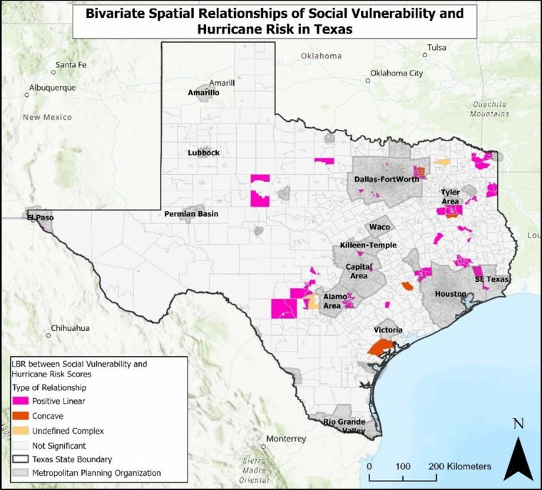

Environmental justice
Challenging environmental-justice assumptions in Texas hurricane risk
A Texas-wide analysis of 6,767 census tracts that tests, rather than assumes, the premise that social vulnerability drives hazard risk. Bivariate and local cluster analysis shows that geographic exposure can outweigh social vulnerability in shaping hurricane risk.
6,767Texas tracts
- Tests the vulnerability premise instead of assuming it
- Shows geography can dominate social vulnerability
- FEMA NRI, LISA, Gi*, GWR